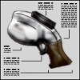

|
|
SCIENCE AND INDUSTRY ADVANCED GUIDE Created by MrBozo |
- What is this advanced guide?
- Teamplay
- Items
- Movements
- Game Modes
- Command Voting
- Client Settings
- Questions & Answers
This advanced guide is an extension to the manual, it covers gameplay techniques that aren't obvious to new players. As time goes, the skill gap between the "veterans" and the new players widens, this guide aims to give new players some knowledge about the game to reduce this gap. This guide is not a replacement to the classic manual: if you do not know how to capture scientists, vote, or destroy equipment, you should read the manual first. Not all the information listed here is essential, you can definitely have fun in the game without knowing any of this. But if you'd like to get better, have a more complete understanding of the game, this guide can be helpful.
In S&I the main objective is to have more scientists than your opponents. This objective divides into 2 jobs:
- Defend the scientists you already have
- Attack to try to capture more scientists
How to decide what to do? There are 6 scientists in the game. A good company should focus on defending or attacking depending on the number of scientists it has. Typically if you have more than 3 scientists, your company should have more defense than offense. If you have less than 3 scientists, more offense and less defense, and if you have 3 scientists, about as much offense as defense. So try to be careful to the number of scientists your company has and to what your teammates are doing, so you know if your company needs a guard or a recruiter.
Being aware of what's going on in the game is essential in S&I. Are we missing a scientist? Is a teammate coming back with a scientist? If so, where is he? Was a scientist dropped? This is the kind of information you want to know about. The HUD helps a lot in knowing what's going on, especially these 2 HUD elements:
- The Notices: the notices are displayed at the bottom of the screen and tell you about voting, research, rewards etc... but what's most important is these notices tell you when someone from your team dropped a scientist and where, when a scientist is missing from your labs, and other key information of the sort. Those important notices are displayed in color (red for defense, blue for offense), read those carefully.
- The Team Panel: the team panel lists the location of your teammates, with special colors depending on each player's status. Read the manual for the list of these colors.
- The Overview: a small part of the overview is displayed in the top-left corner of your HUD, displaying near-by teammates and dropped scientists (from both companies). This is useful for example to know if the near-by player you hear is from your team or not. But the full display of the overview is much more useful: it displays the whole map and you can easily see where your teammates are, if they are carrying a scientist, and where the dropped scientists are. This full map is displayed using the +showmap command.
First, make sure to know how the techtree works.
A good research strategy is fundamental to any company. While the different research options try to be balanced and viable, it is obvious that some strategies are simply better than others. Basically going only 1 way will not work: trying to get all the weapons first won't work, same for getting all the armor and all the implants but no weapon. You need a mix between the different types of research: weapons, armor, implants, devices and process upgrades.
It is usually advised to get the 2 first levels of armor early in the game, since it is very difficult to survive any fight without armor.
Then your strategy should adapt to your situation: if you are winning, going for the satchels and tripmines is a wise decision, as these technologies will greatly help you defend your scientists. If you are losing however, the leg upgrades and Tau Canon are more likely to help you capture scientists.
But be creative, the techtree allows a lot of freedom. The research route you are used to is not necessarily the most efficient for every situation.
This is a list of the weapons available in the game, explaining their primary and secondary modes.
Briefcase
Primary fire: the only melee weapon in the game. Not very powerful at first, it becomes deadly (x2 damage) once your company has researched the Bionic Muscle Fiber Replacements. Note that headshots do work with the briefcase. The briefcase is also used to grab enemy scientists.
Secondary fire: throws the scientist you are carrying (if any).
Colt Defender
Primary fire: this pistol is perfectly accurate and deals 40 damage per shot (48 damage with the Ocular Implants). This weapon will kill an enemy in 3 shots at the start of the game.
Secondary fire: switches to zoom mode if you have the Ocular Implants.
Assault Shotgun
Primary fire: usual shotgun shot with an average spread, useful at close and medium range.
Secondary fire: twice as much damage as the primary fire, but the spread is bigger and the rate of fire is twice slower. This mode is very powerful at close range, especially if you get headshots. Due to the low rate of fire, you should switch to another weapon right after firing.
Tommygun
Primary fire: this machine gun deals a good amount of damage and is quite accurate. Especially useful at medium range, or at any range to finish an enemy who has low health.
Secondary fire: None.
Akimbo snUZIs
This weapon is MCL's version of AFD's Tommygun, it behaves exactly like the Tommygun.
Grenade
Primary fire: throws a grenade in front of you. The grenade has a 3 second fuse. This fuse begins the moment the pin is pulled. You can hold primary fire and release the grenade at the right time to get it to explode right on the enemy. This is quite difficult and requires practice.
Secondary fire: same but releases the grenade behind you. Usually used to release a trail of grenades to kill the enemies chasing you.
Flesh Eating Virus
Primary fire: throws a vial of virus. The virus deals damage over time and affects the player's view. Any enemy touching the cloud created by the vial will be contaminated. The longer the player is in contact with the cloud, the more badly he'll be infected.
Secondary fire: this infects yourself with the virus, and gives you a speed increase. Useful on offense to get a scientist as far as possible before dying.
Crossbow
Primary fire: very powerful hitscan weapon. The crossbow is perfectly accurate and deals a high amount of damage. If you do not hit a player, the bolt explodes on impact. Unlike the Shotgun or the Rocket Pistol, it is not possible to switch weapon right away after firing.
Secondary fire: switches to zoom mode.
Rocket Pistol

Primary fire: launches a rocket. It is quite difficult to hit someone directly, that's why you should try to aim at the feet, letting the explosion radius damage do its job. It is recommended to switch to another weapon right after firing to avoid the firing rate delay.
Secondary fire: none.
Tau Cannon
Primary fire: works with a charge - the longer you charge (hold down the fire), the more damage the shot will deal. Fully charged, this is the most powerful weapon in the game. It is also perfectly accurate and can go through small walls, resulting in a powerful splash damage on the other side.
Secondary fire: does the same as primary fire.
This is a list of the devices available in the game, explaining their primary and secondary modes.
Radio Transistor
Primary fire: if enemy scientists are near, primary fire will plant the radio on the wall you are facing. Radios distract nearby enemy scientists and therefore reduce their efficiency. Try to plant them where they will be hard to find, while remaining close to the scientists.
Secondary fire: changes radio station.
Cloak
Primary fire: this device makes you invisible. Fire once to turn it on, and fire again to turn it off. When it is on, the more you move, the more visible you get, that's why you should barely move when using it, or move step by step slowly. This primary mode is more useful on defense than on attack.
Secondary fire: in this mode you can move freely while remaining invisible, but this drains the battery extremely quickly. This mode is very useful on offense.
Mindray
Primary fire: the Mindray works only on scientists. Use it on your scientists to increase their efficiency (making your company earn more money and research faster), and use it on the enemy scientists to reduce their efficiency. Mindraying enemy scientists isn't very useful (since you could disturb them by firing with any other weapon as well), but mindraying your own scientists can give your company a clear advantage in close games. The mindray also heals your scientists.
Secondary fire: none.
EMP Cannon
Primary fire: launches a pulse. If the pulse hits the enemy, his armor will be highly reduced, he will be slower for a short period of time if he has Leg Upgrades, he will get a white flash if he has the Ocular Implants, he will get uncloaked if he is cloaked, and his extra melee damage will be disabled if he has Bionic Muscle Fiber Replacements. This mode is difficult to use since it isn't hitscan, but its high rate of fire can compensate. Remember you can not kill anyone with this device, it can be used first in a fight to affect the enemy and reduce his armor, but you have to switch to another weapon to finish him.
Secondary fire: throws a canister that detonates on impact. When the canister detonates, the nearby radios, satchels and tripmines will be shortfused, and the enemies will be affected by the EMP (primary fire effect), the effect will depend on the distance from the detonation to the enemy. This mode is useful for attackers in order to disable satchels.
GI-Destabilizer
Primary fire: infects nearby enemies. The infected players will have reduced speed and their view will be altered for a little bit of time. This device is effective on both defense and offense, but be careful: the effect wears off quickly.
Secondary fire: none.
Satchels
Primary fire: if you have already thrown satchels, it will trigger them to explode. Otherwise it will throw a satchel down. Satchels are extremely powerful on defense, and can be used occasionally on attack.
Secondary fire: allows to throw more satchels.
Tripmines
Primary fire: plants the tripmine on the wall you're facing. Try to plant 2 tripmines at a time, in corners, or vents, and generally in places where the enemy won't see them until the last second.
Secondary fire: none.
The Super Jump research enables you to perform longer and higher jumps. To perform this special jump, all you have to do is hold forward when jumping, but without holding any other movement key. The Super Jump gives you a boost in the direction you are facing. If you want to jump higher, simply look up, hold forward, and jump. If you want to jump longer, look forward, hold forward and jump. The boost is increased once you have researched Cybernetic Leg Implants (MkII). It is impossible to perform a Super Jump when carrying a scientist or a resource.
The Super Jump allows you to move more easily in the world, access higher places, jump above obstacles. It can also be used in fights to confuse the enemy, or dodge a rocket, you can even jump above an enemy and try to surprise him from above if you get good with the Super Jump.
The Super Jump research also enables you to perform jumps off walls. This is done the exact same way you perform a Super Jump, except that you need something solid behind you. Try it by Super Jumping towards a wall, looking in the other direction, and performing another Super Jump when reaching the wall. Read the part about the Super Jump if you don't know how to perform a Super Jump.
One of the most fun movements in S&I is probably Tau Jumping. If you have played with the Tau Cannon, then you have noticed its big kickback. When you use the secondary fire, the longer you charge the Tau, the more kickback you get when you fire. This can be disorienting, but it can also be very useful: you can use this kickback to perform huge jumps. Simply charge the Tau, point it at the opposite of where you want to go (for example aim at the ground if you want to jump high in the air), perform a normal jump, and quickly release the charge to fire.
This feature of the Tau Cannon is extremely helpful: it can make you jump very high, and it can also make you jump forward and that enables you to move a LOT faster. However it takes quite a bit of time to get really good at Tau Jumping. Also note that the Tau kickback is reduced when you are carrying a scientist.
The push you get from explosions can be used to perform special jumps. While all explosives can be used, most of them will hurt you too much to consider using them (satchels, grenades, tripmines). But the Crossbow primary fire, and occasionally the Rocket Pistol can be very useful.
Just fire at the ground and jump right away. Explosive pushes are twice as powerful when you are ducked. So to get full advantage of an explosive, you should jump first, and then crouch jump on the ground while firing with your explosive weapon at the ground. But don't abuse explosive jumping since it hurts quite a bit. And unlike the kickback of the Tau, explosion pushes are not reduced when you are carrying a scientist.
The EMP Cannon primary fire provides a very little push similar to an explosion. This push is not powerful enough to enable a regular explosive jump, but since the rate of fire of the EMP is high, it can be used to "climb" a wall.
Just face a wall, aim at about 45 degrees down, jump, duck and start shooting. You will quickly climb the wall. You can also note that unlike explosives, this technique doesn't hurt you at all. And the push is not reduced when you carry a scientist.
When you are in the air, after a Tau Jump for example, it is possible to control where you are going. You are not forced to go straight, you can change direction in air. In order to control the direction, there are some tips to follow:
- Release forward. You can't have any air control if you keep holding forward in air.
- Turn to the direction you want to go to.
- When turning, press the strafe key that corresponds to your mouse movement. This means that if you turn left, you have to hold the strafe left key, and strafe right if you're turning right.
Bunny Jumping is a movement technique that allows you to increase your speed. It is done by constantly jumping while releasing the forward key, and performing a special mouse and strafe movement.
The technique: bunny jumping is based on Air Control. You have to master air control before being able to bunny jump. Once you do, bunny jumping is easy: all you have to do is keep jumping and perform air control movements. A bunny jumping sequence can look like this: go forward, jump, release forward, turn left and strafe left, jump, turn right and strafe right, jump, turn left and strafe left, jump... You don't have to go left-right-left-right, this just allows to go straight, but if you keep going left for example, it works too. Just remember to keep jumping: as soon as you land you should be jumping right away. You can just start pressing jump when in the air so you are sure to jump right away when you touch the ground.
Note that you can get some speed right from the first jump: if you have the Super Jump, just use it as your first jump. And if you don't, you should try to perform an air control kind of movement on the ground before performing the first jump (example: forward + strafe left + turn left, and then jump, this is usually called an "Accel Jump").
Strafe Jumping is a movement technique very similar to Bunny Jumping. This technique allows you to get speed faster than when bunny jumping, however you can not turn in the air when performing it. That's why the best move is to combine both Strafe Jumping and Bunny Jumping.
The technique: the jumping is the same as in bunny jumping - you have to keep jumping. It's the movement performed in the air that is different, and this movement is not easy to explain. First, here you have to keep holding your forward key. Since you hold forward, you don't have much air control, that's why you can only go almost perfectly straight when strafe jumping.
Here's an example of a strafe jumping sequence:
- Go forward, jump (and keep holding forward)
- Turn to the left slowly while holding strafe left
- Jump and turn very quickly to the right. If you were at for example 15 degrees to the left of your movement direction, turn quickly to 15 degrees to the right of your movement direction.
- Turn to the right slowly while holding strafe right
When you crouch after a jump, you slide on the ground for a limited period of time. This is called Crouch Sliding. Crouch Sliding allows you to keep your speed while going up short stairs, or going through vents, or anywhere where the ceiling is low. If you release +forward while crouch sliding, you have some control on your direction, exactly like the air control you have while bunny jumping.
While bunny jumping and strafe jumping allow to go faster, the speed increase can be limited. Each time you touch the ground and perform a jump, your speed can be more or less reduced. The speed limit evolves depending on what Cybernetic Leg Implant your company has researched. Without any, the limit is around 40%, with Cybernetic Legs MkI, the limit is around a 100% increase, and finally with Cybernetic Legs MkII, there is no limit. But when you are carrying a scientist or a resource, the limit is always set at 40% no matter what Cybernetic Leg Implant you have.
Servers can decide to use special game modes that differ from the standard Science & Industry gameplay. These game modes are enabled by using the command mode [modename]. The command runs the config file si/gamemodes/[modename].cfg. If a server uses a special game mode, the name of the game mode appears in the 'Game' column of Steam's server browser. Default game modes included with the game are:
- Briefcase Only: Briefcase Only Mode - only the Briefcase is available.
- Fast: Fast Research Mode - shorter game (15 minutes instead of 30) with a faster research speed.
- Jumpmode: Movement Practice Mode - unlimited ammo, invincible, players go through each other and can not hurt each other.
- LCS: Last Company Standing - round-based mode where dead players spectate until all the players of one company are dead, then a new round starts. Players spawn with all weapons.
- LCS Research: Last Company Standing with 1 Research per round - same as LCS except that no research is done at the start of the game, and 1 new technology is completed at each round.
- Match: Match Settings - Standard gameplay with a few competition settings: friendly fire is enabled, players can't use the Briefcase in third person view, and teams are not forced.
- Midair: Rocket Pistol Midair - only the Rocket Pistol is available, and damage is applied only if the target is in the air.
- Speedcap: Speed Capture - round-based race mode where all players spawn at a same point and have to capture a scientist as quickly as possible. A new round starts 10 seconds after the fastest player has captured a scientist.
It is possible to start a command vote on a server to change the level, kick a player, start a match, change a setting... The server decides which commands can be voted for and which can not. The following line has to be typed in the console to start a vote: callvote [command] [parameter]. So, for example: "callvote changelevel si_laser" would start a vote to change the level to si_laser. Once a callvote is started, players vote with the yes or no commands (available in the Controls). If enough "yes" votes are recorded, the vote succeeds and the voted command is applied.
Having a good config that suits your style of play helps a lot. Something very useful is direct weapon binds. They are available in the "Options", in the "Controls" tab, and they allow you to access any weapon with a single key press instead of having to go through the weapon menu. Try to bind the weapons you use the most, this will simplify the game.
There are also a lot of client variables allowing you to tweak your HUD, special effects and more. A list of all the cvars is available, and most settings can easily be changed in-game using the Commandmenu, or the "Advanced..." screen in the "Multiplayer" tab of the "Options" menu.
Here are some important cvars you might want to change:
- cl_tutorial (default=1) toggles hint pop-ups.
- cl_allowthirdperson (default=3) toggles third-person camera. 0: disables. 1: enables for briefcase. 2: enables for cloak. 3: enables for both.
- cl_votemenu_lightmode (default=0) if set to 1 only the vote buttons will appear in the vote menu.
- cl_votemenu_capturemouse (default=1) toggles whether the cursor is captured under the vote menu.
- cl_votemenu_quickvote (default=0) if set to 1, the number keys will cast a vote directly, and not just toggle the info.
- cl_votemenu_popup (default=0) toggles how the vote menu is triggered. 0: vote menu is not brought up until the "vote" key is pressed. 1: vote menu pops up automatically as soon as the voting session begins.
- hud_notices_filter (default=0) you can set this to 1 to remove most of the notices and keep only the few important ones. Set to 2 to remove even more notices and keep only the ones that give information that isn't already somewhere else on the HUD (team panel, scientist number).
- hud_speedometer_bar (default=0) if set to 1, the HUD displays your speed / max speed percentage in a graphic bar.
- hud_speedometer_text (default=0) if set to 1, the HUD displays your current speed, max speed, and speed / max speed percentage.
- hud_show_ammohistory (default=0) if set to 1, sprites of the weapons you pick up are displayed on the HUD. If set to 2, ammo sprites are also displayed.
- hud_location_indicator (default=0) if set to 1, the HUD displays the name of your current location.
Weapon slots, positions and weights can also be changed, but there's no in-game menu for that. You'll have to edit your si/weapons.cfg file if you want to use custom weapon settings.
Do weapons deal more damage if aimed at the head?
Yes. Twice as much.Does my movement speed depend on the weapon I am holding?
Your speed is the same when holding any weapon but the briefcase: you are slightly (6.5%) faster when holding the briefcase.Are there clans for this game? Any competition? Where can I find demos?
There are clans and there is a league. Some match demos are also available. All the information you need is available on the SI-Central website. And join #S&I on Quakenet. Also, the best way to start playing organized games of SI is to join #sipickup and play some pickup games.